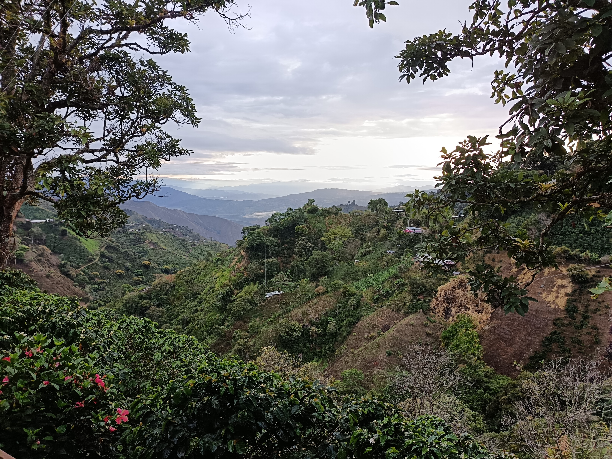

Café de Especialidad
Origen Huila · 92 puntos SCA · Producción de microlotes
Origen Huila · 92 puntos SCA · Producción de microlotes
Nuestro café nace en las montañas del Huila, Colombia. Trabajamos microlotes seleccionados para ofrecer consistencia, trazabilidad y un perfil sensorial complejo orientado a restaurantes, hoteles y cafeterías de especialidad.
La Plata, Huila – Colombia
1.900 msnm
92 puntos SCA
Variedad desarrollada por Cenicafé. Alta resistencia a la roya, excelente estabilidad productiva
y gran potencial en cafés de altura. Perfil dulce y equilibrado.
Notas: chocolate, panela, caramelo, cítricos.
Microlotes seleccionados de zonas de alta montaña del Huila. Mayor complejidad y dulzor natural.
Notas: miel, flores blancas, frutas de hueso.
Híbrido resistente con taza limpia y equilibrada. Muy usado en caficultura colombiana.
Notas: chocolate, caramelo, frutos secos.
Línea genética avanzada con excelente adaptación a altura y muy buena calidad en taza.
Notas: cacao, panela, frutas maduras.
Variedad exclusiva de Colombia con perfil altamente floral y complejo, muy valorada en especialidad.
Notas: jazmín, cítricos, frutas tropicales.
Una de las variedades más prestigiosas del mundo del café de especialidad.
Notas: frutos rojos, melocotón, miel, flores blancas.
Origen Huila · 92 puntos SCA · Producción de microlotes
Nuestro café nace en las montañas del Huila, Colombia. Trabajamos microlotes seleccionados para ofrecer consistencia, trazabilidad y un perfil sensorial complejo orientado a restaurantes, hoteles y cafeterías de especialidad.
La Plata, Huila – Colombia
1.500 – 2.000 msnm
92 puntos SCA
Variedad desarrollada por Cenicafé. Excelente resistencia, gran estabilidad productiva y una taza equilibrada.
Notas: Chocolate, panela, caramelo y cítricos.
Microlotes cultivados en zonas privilegiadas del Huila con gran dulzor y complejidad.
Notas: Miel, flores blancas y frutas de hueso.
Variedad emblemática colombiana con excelente equilibrio y limpieza.
Notas: Chocolate, caramelo y frutos secos.
Selección genética de alto rendimiento y gran calidad sensorial.
Notas: Cacao, panela y frutas maduras.
Una de las variedades más exclusivas de Colombia, muy floral y elegante.
Notas: Jazmín, bergamota, cítricos y frutas tropicales.
Variedad premium muy apreciada por tostadores de especialidad.
Notas: Frutos rojos, melocotón, miel y flores blancas.



Chocolate negro · Caramelo · Frutos rojos · Cítricos suaves · Panela